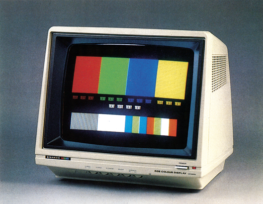
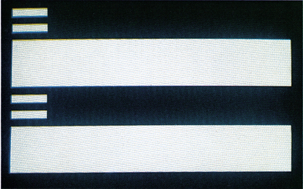
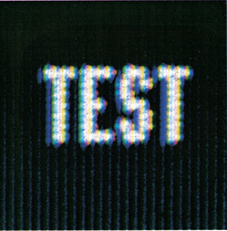
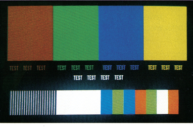

Monitortest: Was ist zu beachten?
Im 80-Zeichen-Modus an den C 128 anschließbar ist der Farbmonitor CD 3220 N. Was bringt er im Vergleich zum 1901? Ferner zeigen wir Ihnen, auf welche Kriterien Sie beim Monitorkauf achten sollten.

Benötigen Sie häufig oder ständig den 80-Zeichen-Modus des C 128? Können Sie dabei nicht auf Farbe, wohl aber auf Sound verzichten? Dann dürfte ein Monitor, der nur über einen RGB-Anschluß verfügt, der Richtige für Sie sein. Dazu erfahren Sie auch, wie Sie relativ schnell feststellen können, ob ein Monitor Ihren Qualitätsansprüchen genügt.
Für die meisten Anwendungen und CP/M wird beim C 128 der hochauflösende 80-Zeichenmodus zur Darstellung benötigt. Da jedes Zeichen einer 8x8-Punktmatrix entspricht und durch den Bildschirmrand etwa die Hälfte der Gesamtbreite verlorengeht, muß der Monitor mehr als 8x80x1,5=960 Punkte pro Zeile darstellen können. Diese Auflösung ist bei Farbmonitoren nur durch die direkte Verwendung des RGB-Signals erreichbar. Dafür wiederum sind Monitore notwendig, die sowohl über eine höhere Auflösung, als auch über einen entsprechenden Signaleingang verfügen als ihre nur für 40 Zeichen ausgelegten »Kollegen«. Ein solcher Monitor ist der CD 3220 N von Sanyo. Er ist für unter 900 Mark erhältlich, und kann nur an den RGB-Ausgang des C 128 angeschlossen werden. Composite-Signale (die des 40-Zeichen-Modus) kann er nicht verarbeiten, auch ein Audioteil ist nicht vorhanden. Das läßt, bei diesem Preis, auf eine hohe Bildqualität hoffen.
Verkabelt
Zum CD 3220 N (Bild 1) gehört neben den Schaltungsunterlagen ein Kabel, das die Verbindung zum Computer herstellen soll. Für 69 Mark wird ein etwa 1,60 Meter langes Kabel mit einem 8poligen VTR-Stecker an der einen und sauber abisolierten Drähten an der anderen Seite geliefert. Somit benötigt man noch einen 9poligen Cannon-Stecker für den C 128. Anhand der mitgelieferten Anschlußbelegung sind Kabel und Stecker miteinander zu verlöten. Die Zuordnung ist ganz einfach, man muß nur die Litzen mit den Kontakten verbinden, die die gleiche Bezeichnung tragen (Bild 2 ). Vergessen Sie dabei nicht, die Abschirmung der Synchronisationssignale an Masse zu legen, da diese sich sonst gegenseitig stark stören.
| Monitorseite | C 128 |
|---|---|
| unbelegt | 1 |
| Gelb + Abschirmung | 2, Masse |
| Rot | 3, R |
| Braun | 4, G |
| Blau | 5, B |
| Orange | 6, Intensität |
| unbelegt | 7 |
| Rot, abgeschirmt | 8, Horizontal Sync |
| Weiß, abgeschirmt | 9, Vertikal Sync |
Wie wird getestet?
Wenden wir uns wieder dem Monitor zu. Folgende Kriterien definieren die Bildqualität. Das Bild muß »scharf« sein; ausschlaggebend dabei ist die Farbkombination weiße Zeichen auf schwarzem Hintergrund und umgekehrt. Die Pixel der einzelnen Zeichen müssen deutlich sichtbar sein. Neben dem Zeichen liegende Bildpunkte der Röhre dürfen nicht mitleuchten, sonst erscheinen die Zeichen verschwommen. Am besten testen Sie die Bildschärfe mit den Buchstaben »M, m, W, w«. Sind die senkrechten Linien des »m« nicht mehr deutlich voneinander zu trennen, besitzt der Monitor eine zu geringe Auflösung. In den Bildecken dürfen keine Verzerrungen sichtbar sein, ebenso dürfen waagrechte und senkrechte Linien nicht verzerrt werden (Linearitätsfehler). Auch muß das Bild an den Rändern genauso scharf sein wie im Zentrum (Fokussierungsfehler). Farben müssen brillant wiedergegeben werden. Farbfelder, die direkt nebeneinander liegen, dürfen keine Übergangszone haben. Besonders gut eignen sich zum Test senkrechte Übergänge der Grundfarben Rot, Blau und Grün. Als nächstes testen Sie, wie der Monitor auf große Weißflächen (wie in Bild 3) reagiert. An der waagerechten Übergangsgrenze zwischen Schwarz und Weiß darf das Bild nicht eingeschnürt sein. An der senkrechten Grenze dürfen keine farbigen Striche zu sehen sein. Drehen Sie bei allen Tests ruhig einmal den Kontrast- und den Helligkeitsregler etwas zu weit auf, wie es in einem sehr hellen Raum nötig sein kann. So lassen sich Unsauberkeiten besser erkennen. Zu guter Letzt prüfen Sie, ob sich »Geisterbilder« (nach rechts verschobenes schwaches Doppelbild) oder »Rücklaufstreifen« (dünne diagonale Linien) zeigen. So sehen Sie auch, ob der Regelbereich groß genug ist, um Helligkeit und Kontrast den späteren Helligkeitsverhältnissen anpassen zu können. Insgesamt haben Sie jetzt einen aussagekräftigen Eindruck vom Bild des Monitors!

Der CD 3220 N
Nun zu unserem Testobjekt. Der CD 3220 N hat eine 14-Zoll-Bildröhre mit Schlitzmaske. Sie ist, wie die des 1901, nicht entspiegelt. Die Auflösung ist auf 40 x 25 Zeichen (Normal) ausgelegt. Das ist keine allzu genaue Angabe, denn die 80 Zeichen pro Zeile des C 128 sind gut lesbar. Das Intensitätssignal ist von außen abschaltbar. Ebenso ist eine 50/60-Hertz-Umschaltung vorhanden, so daß auch Computer mit 60 Hz Bildwechselfrequenz anschließbar sind. Alle Regler (50/60 Hz, Vertical Hold (Bildfang) , horizontale Zentrierung, Helligkeit und Intensitäts-Schalter) sind an der Frontseite des Gerätes untergebracht.
Die Schrift im 80-Zeichen-Modus ist scharf, selbst in der Vergrößerung (Bild 4) ist nur ein kleiner Schatten sichtbar. Durch die Vergrößerung sind die einzelnen Pixel der Buchstaben deutlich zu sehen. Die großflächigen Farbfelder in Bild 5 wirken satt, lediglich das Rot erscheint etwas zu dunkel. Die kleineren Farbfelder trennt der Monitor ohne zu verschmieren.


Die Weißfelder in Bild 3 sind im Gegensatz zum 1901 ohne jegliche Verzerrungen an den waagerechten Übergängen. Auch treten hier nicht die Geisterbilder auf, die man beim 1901 nur durch eine geeignete Helligkeits- und Kontrastregelung wegbekommt. Die senkrechten Schwarzweiß-Übergänge (Bild 5) werden ebenso gemeistert. An den Rändern treten keine farbigen Streifen auf. Selbst bei großer Helligkeit bläht sich das Bild kaum auf und verzerrt vor allem nicht.
Wünschenswert wäre eine Entspiegelung gewesen, da langes Arbeiten an nicht entspiegelten Geräten bei nicht optimalen Lichtverhältnissen anstrengt und manchmal unangenehm irritiert. Letzter Wermutstropfen war das nur halbfertige Kabel. Nicht jedem Anwender kann die Arbeit mit dem Lötkolben zugemutet werden. Sieht man davon einmal ab, kann auch ein Monitor wie der CD 3220, trotz fehlender 40-Zeichen-Darstellung und ohne Audioteil, durchaus für C 128-Anwender eine Alternative sein.
(og)Sanyo Video Vertrieb, Lange Reihe 29, 2000 Hamburg 1